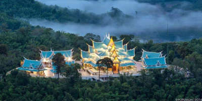
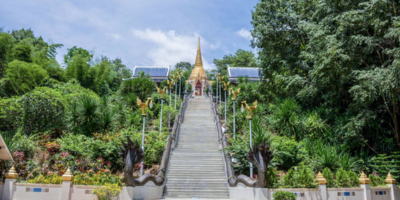
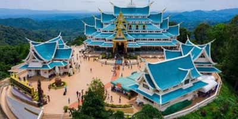

หน้าแรก ‚
พิพิธภัณฑบ้านเชียง ‚
ทะเลบัวแดง ‚
อุทยานประวัติศาสตร์ภูพระบาท ‚
วัดป่าภูก้อน ‚
วัดป่าคำชะโนด



❮
❯
วัดป่าภูก้อน ตั้งอยู่ในเขตป่าสงวนแห่งชาติป่านายูงและป่าน้ำโสม ท้องที่บ้านนาคำ ตำบลบ้านก้อง อำเภอนายูง จังหวัดอุดรธานี อันเป็นรอยต่อแผ่นดิน 3 จังหวัด คือ อุดรธานี เลย และหนองคาย กำเนิดขึ้นจากการดำริชอบของพุทธบริษัทสี่ ผู้ตระหนักถึงคุณประโยชน์อันยิ่งใหญ่ของธรรมชาติและป่าต้นน้ำลำธาร ซึ่งกำลังถูกทำลาย
ในปัจจุบันนี้ วัดป่าภูก้อนดำรงคงอยู่ด้วยความสมดุลของป่าไม้ที่ทวีความอุดมสมบูรณ์ขึ้นทุกคืนวัน โดยบุคคลผู้มีความศรัทธาและระลึกคุณของสรรพสิ่งทั้งหลายของชาติและแผ่นดินอันเป็นที่กำเนิดแห่งชีวิต โดยมีคุณพระพุทธศาสนาเป็นเครื่องสำนึก และมีพระมหากรุณาธิคุณของพระมหากษัตริย์ที่ชาวไทยทุกคนควรทดแทน เป็นกำลังใจส่งเสริมพระสงฆ์ผู้ปฎิบัติดีปฎิบัติชอบให้ดำรงปฏิปทาของพระป่ากรรมฐานเพื่อบูชาคุณพระพุทธ พระธรรม พระสงฆ์ จนถึงที่สุด
ข้อมูลการติดต่อ
ที่อยู่:
บ้านนาคำใหญ่ ตำบลบ้านก้อง อำเภอนายูง จังหวัดอุดรธานี 41380
โทรศัพท์:
042-219-920
วันและเวลาทำการ:
เปิดทุกวัน เวลา 08.30–17.00 น.
ค่าเข้าชม:
เข้าชมฟรี
Facebook:
https://www.facebook.com/watpaphukon/